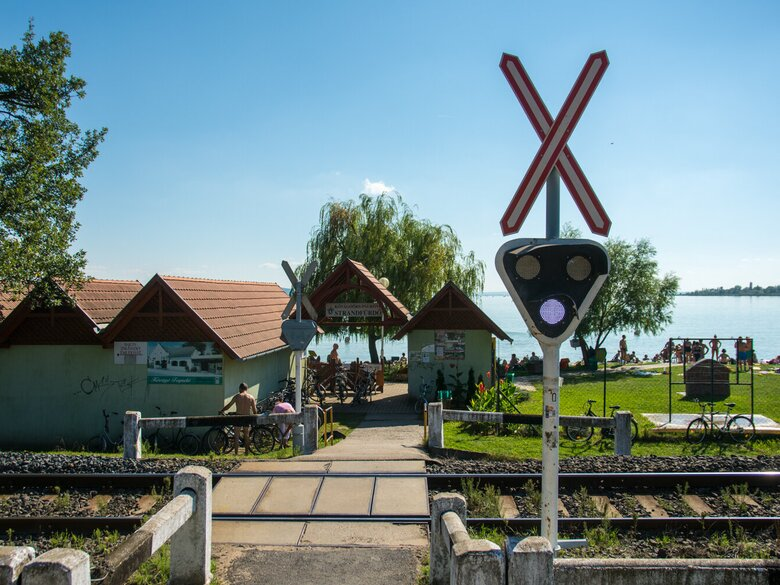
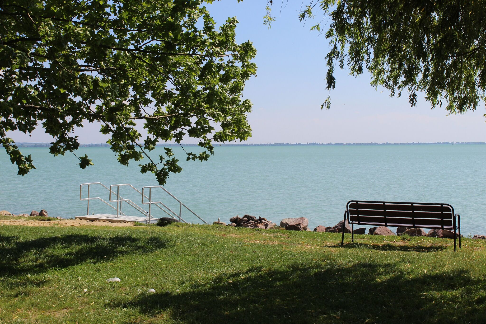
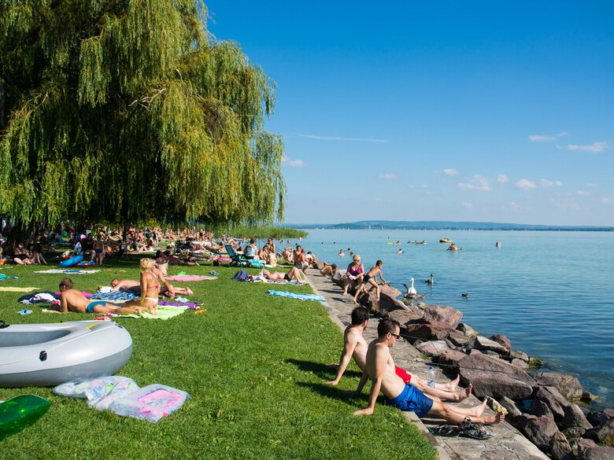

Balaton Pálköve
Pálköve Kővágóörshöz tartozó üdülőtelep a Balaton partján Balatonrendes és Révfülöp között.
Információk:
- Balatonrendessel részben egybeépült
- Partjain található a Balaton kevés megmaradt ősnádasainak egyike.
- Horgászni a strand területén tilos!
- Állatot a strand területére bevinni tilos!
Pálkövei strand



Képek a strandról
Vissza a lap tetejére